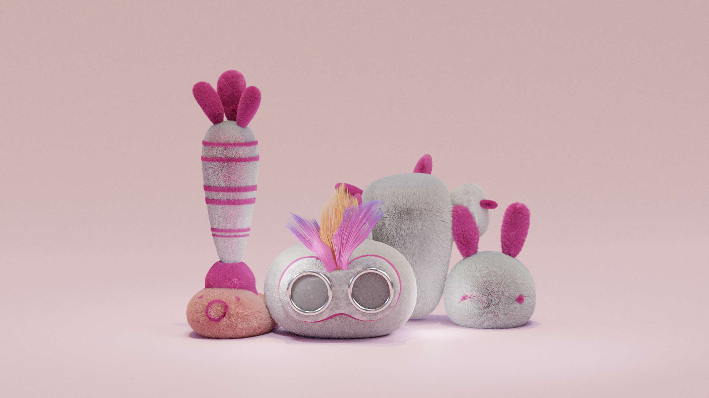
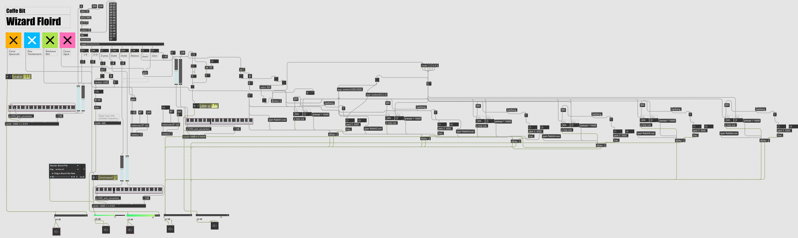

Final Project Show

整体介绍
我们组成员纯手工制作羊毛毡玩偶，里面内置不同的传感器。利用各种输入类型的传感器，结合毛毡制作成可交互的媒介，并在电脑端播放音乐。操作后会有音乐反馈，用户可以通过操作毛毡玩偶自己制作乐曲。
所需材料
清单：
MAXMSP 如何实现音乐交互

不同传感器及对应操作方式
超声波 传感器（火烈鸟）-- 根据用户手指距离火烈鸟眼睛远近发出不同的声音
麦克风传感器（仙人掌） -- 根据用户声音大小发出不同的声音
在旋转传感器（胡萝卜）-- 根据用户转动萝卜的角度发出不同的生意
触摸传感器（兔子）-- 根据用户是否触摸兔子发出不同的声音
Arduino 代码实现
这里是代码文件。效果展示